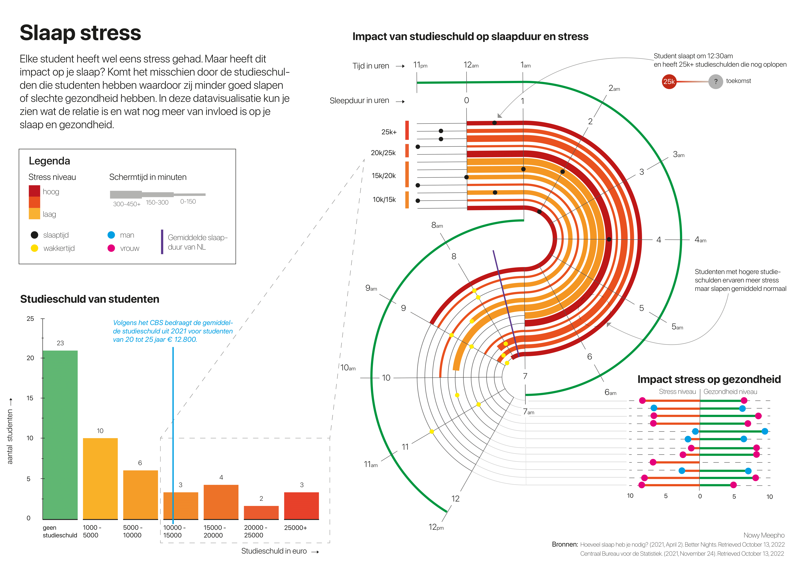

DATA VISUALIZATION
Project case
This project features three interconnected data visualizations combining survey data and an external dataset, presented on an A3 poster. Each visualization includes a clear title, explanatory context, and various chart types, with one incorporating at least four variables. Additionally, a biased visualization demonstrates how data can be manipulated to mislead, showcased as a sketch. The entire project, along with insights and reflections.
Key goals:
This project aims to effectively communicate complex data through clear visualizations that integrate multiple variables and external datasets. It also demonstrates how data manipulation can mislead through a biased visualization. Each visualization will feature a title and context, showcasing the data’s insights and relationships.
My Concept:
The data visualization shows that higher student debt leads to more stress, but sleep duration remains largely unaffected. This suggests that while debt impacts mental health, it doesn’t necessarily alter sleep patterns, highlighting the complexity of debt’s effect on student well-being.
Tools:
- Notion
- Excel
- Adobe Illustrator
Conclusion
The data visualization shows that higher student debt leads to more stress, but sleep duration remains largely unaffected. This suggests that while debt impacts mental health, it doesn’t necessarily alter sleep patterns, highlighting the complexity of debt’s effect on student well-being.